geom_label(mapping = NULL, data = NULL, stat = "identity", position = "identity", parse = FALSE, show.legend = NA, inherit.aes = TRUE, ..., nudge_x = 0, nudge_y = 0, label.padding = unit(0.25, "lines"), label.r = unit(0.15, "lines"))geom_text(mapping = NULL, data = NULL, stat = "identity", position = "identity", parse = FALSE, show.legend = NA, inherit.aes = TRUE, ..., nudge_x = 0, nudge_y = 0, check_overlap = FALSE)
aes or
aes_. If specified and inherit.aes = TRUE (the
default), is combined with the default mapping at the top level of the
plot. You only need to supply mapping if there isn't a mapping
defined for the plot.NA, the default, includes if any aesthetics are mapped.
FALSE never includes, and TRUE always includes.FALSE, overrides the default aesthetics,
rather than combining with them. This is most useful for helper functions
that define both data and aesthetics and shouldn't inherit behaviour from
the default plot specification, e.g. borders.layer. There are
three types of arguments you can use here:
color = "red" or size = 3.
stat associated with the layer.
TRUE, text that overlaps previous text in the
same layer will not be plotted. A quick and dirty waygeom_text adds text directly to the plot. geom_label draws
a rectangle underneath the text, making it easier to read.
Note the the "width" and "height" of a text element are 0, so stacking and dodging text will not work by default, and axis limits are not automatically expanded to include all text. Obviously, labels do have height and width, but they are physical units, not data units. The amount of space they occupy on that plot is not constant in data units: when you resize a plot, labels stay the same size, but the size of the axes changes.
geom_text understands the following aesthetics (required aesthetics are in bold):
label
x
y
alpha
angle
colour
family
fontface
hjust
lineheight
size
vjust
geom_labelCurrently geom_label does not support the rot parameter and
is considerably slower than geom_text. The fill aesthetic
controls the background colour of the label.
You can modify text alignment with the vjust and hjust
aesthetics. These can either be a number between 0 (right/bottom) and
1 (top/left) or a character ("left", "middle", "right", "bottom", "center",
"top"). There are two special alignments: "inward" and "outward".
Inward always aligns text towards the center, and outward aligns
it away from the center
p <- ggplot(mtcars, aes(wt, mpg, label = rownames(mtcars))) p + geom_text()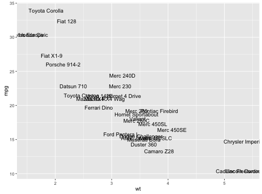
# Avoid overlaps p + geom_text(check_overlap = TRUE)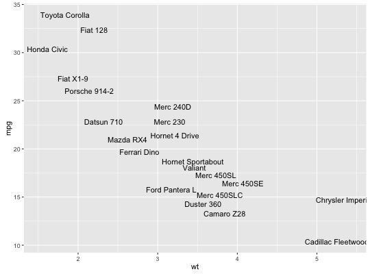
# Labels with background p + geom_label()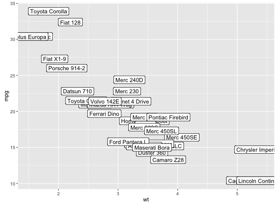
# Change size of the label p + geom_text(size = 10)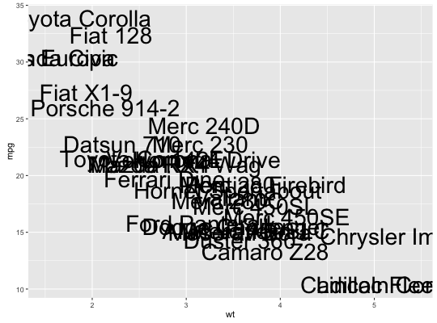
# Set aesthetics to fixed value p + geom_point() + geom_text(hjust = 0, nudge_x = 0.05)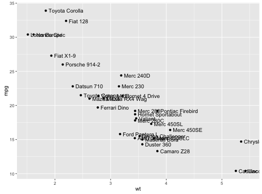
p + geom_point() + geom_text(vjust = 0, nudge_y = 0.5)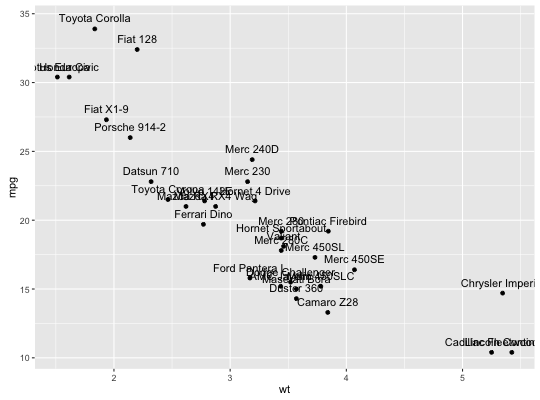
p + geom_point() + geom_text(angle = 45)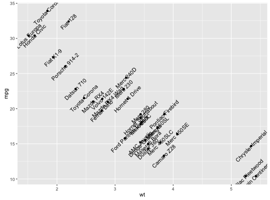
## Not run: # p + geom_text(family = "Times New Roman") # ## End(Not run) # Add aesthetic mappings p + geom_text(aes(colour = factor(cyl)))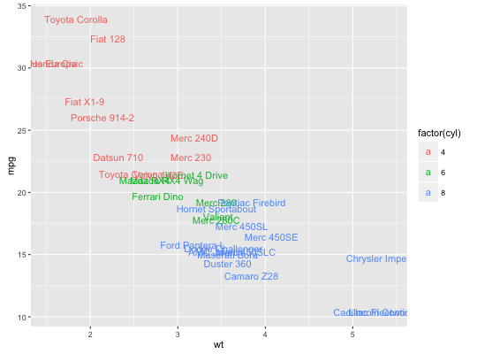
p + geom_text(aes(colour = factor(cyl))) + scale_colour_discrete(l = 40)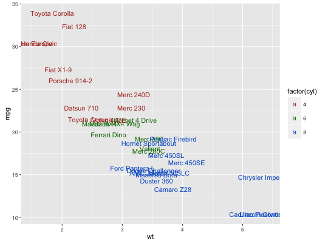
p + geom_label(aes(fill = factor(cyl)), colour = "white", fontface = "bold")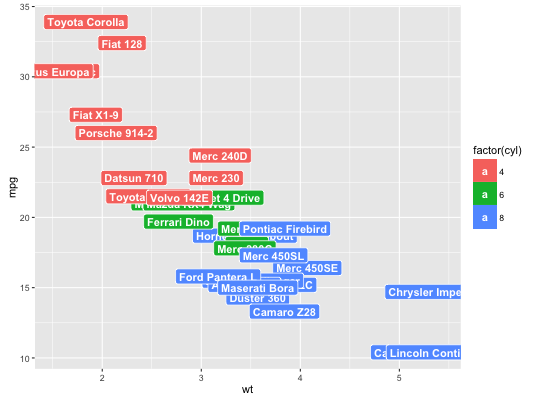
p + geom_text(aes(size = wt))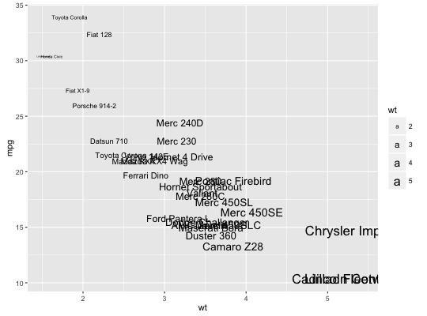
# Scale height of text, rather than sqrt(height) p + geom_text(aes(size = wt)) + scale_radius(range = c(3,6))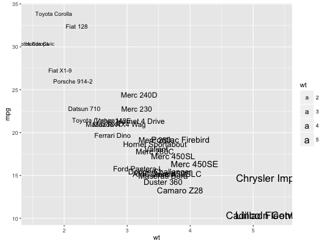
# You can display expressions by setting parse = TRUE. The # details of the display are described in ?plotmath, but note that # geom_text uses strings, not expressions. p + geom_text(aes(label = paste(wt, "^(", cyl, ")", sep = "")), parse = TRUE)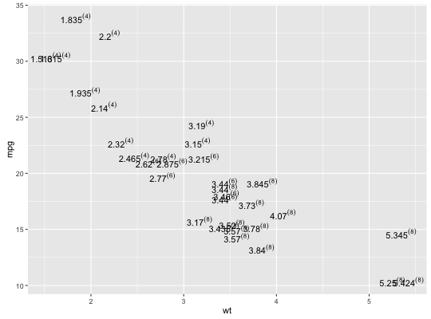
# Add a text annotation p + geom_text() + annotate("text", label = "plot mpg vs. wt", x = 2, y = 15, size = 8, colour = "red")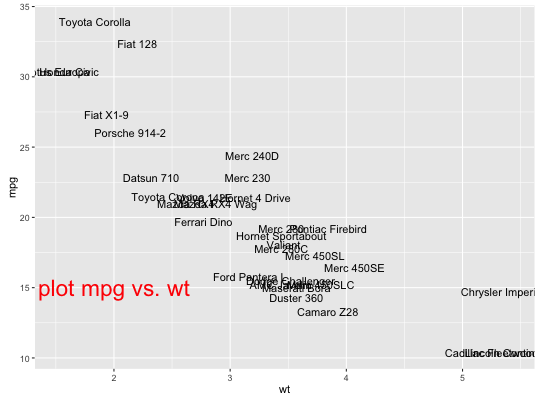
# Aligning labels and bars -------------------------------------------------- df <- data.frame( x = factor(c(1, 1, 2, 2)), y = c(1, 3, 2, 1), grp = c("a", "b", "a", "b") ) # ggplot2 doesn't know you want to give the labels the same virtual width # as the bars: ggplot(data = df, aes(x, y, fill = grp, label = y)) + geom_bar(stat = "identity", position = "dodge") + geom_text(position = "dodge")Warning message: Width not defined. Set with `position_dodge(width = ?)`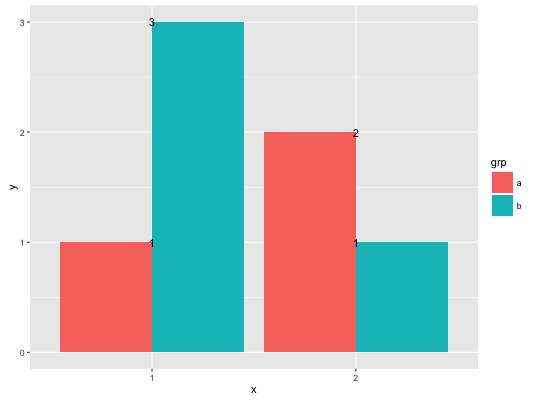
# So tell it: ggplot(data = df, aes(x, y, fill = grp, label = y)) + geom_bar(stat = "identity", position = "dodge") + geom_text(position = position_dodge(0.9))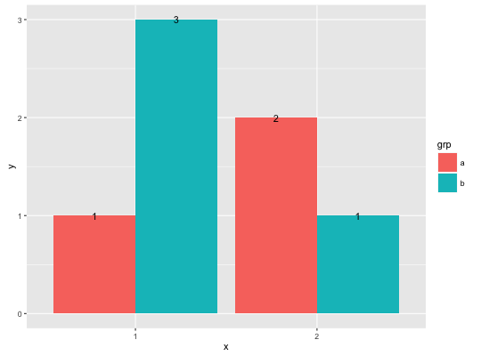
# Use you can't nudge and dodge text, so instead adjust the y postion ggplot(data = df, aes(x, y, fill = grp, label = y)) + geom_bar(stat = "identity", position = "dodge") + geom_text(aes(y = y + 0.05), position = position_dodge(0.9), vjust = 0)# To place text in the middle of each bar in a stacked barplot, you # need to do the computation yourself df <- transform(df, mid_y = ave(df$y, df$x, FUN = function(val) cumsum(val) - (0.5 * val))) ggplot(data = df, aes(x, y, fill = grp, label = y)) + geom_bar(stat = "identity") + geom_text(aes(y = mid_y))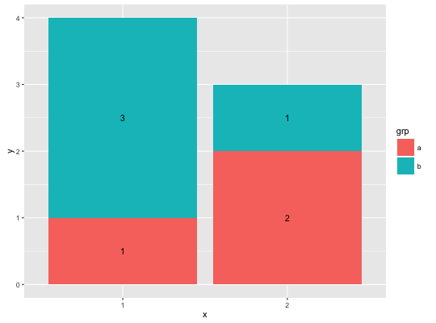
# Justification ------------------------------------------------------------- df <- data.frame( x = c(1, 1, 2, 2, 1.5), y = c(1, 2, 1, 2, 1.5), text = c("bottom-left", "bottom-right", "top-left", "top-right", "center") ) ggplot(df, aes(x, y)) + geom_text(aes(label = text))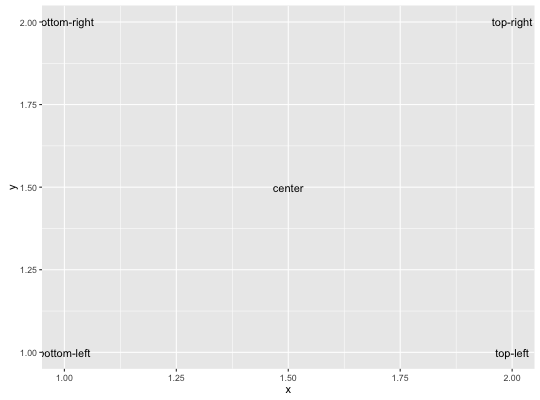
ggplot(df, aes(x, y)) + geom_text(aes(label = text), vjust = "inward", hjust = "inward")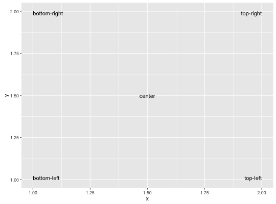